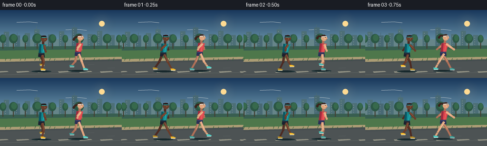
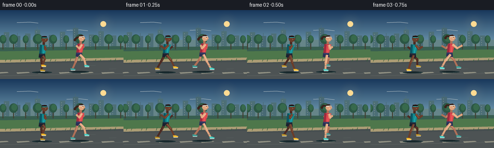
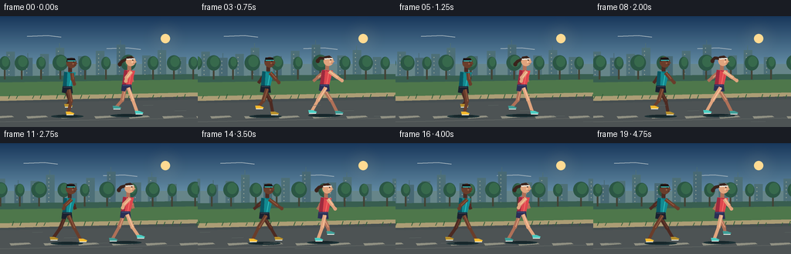
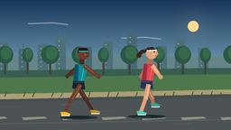
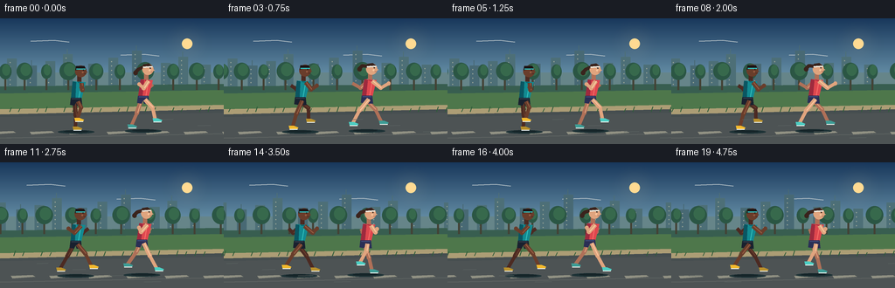

CODING AGENTS AS PIXEL WORLD MODELS
traex/GPT-5.6-Sol · instance_preservation_0033
点击播放 · 原生 RGB 像素
逐轮保存的候选
回放视频、检查图与代码变化。
每份候选均可单独播放。实际图片检查记录在下方工具轨迹中。
候选 01播放与检查图
点击播放 · 原生 RGB 像素


展开代码变化
--- 上一保存版本
+++ 本次保存版本
@@ -0,0 +1,252 @@
+from pathlib import Path
+import json, math
+import numpy as np
+from PIL import Image, ImageDraw, ImageFilter
+import artifact_io
+
+CASE_DIR = Path(__file__).resolve().parent
+spec = json.loads((CASE_DIR / "task_spec.json").read_text())
+W, H, N = spec["width"], spec["height"], spec["frames"]
+S = 4
+
+def sc(v): return int(round(v*S))
+def pts(seq): return [(sc(x), sc(y)) for x,y in seq]
+def ellipse(d, box, fill, outline=None, width=1):
+ d.ellipse(tuple(sc(v) for v in box), fill=fill, outline=outline, width=sc(width) if outline else 1)
+def line(d, xy, fill, width, joint="curve"):
+ d.line(pts(xy), fill=fill, width=sc(width), joint=joint)
+def poly(d, xy, fill): d.polygon(pts(xy), fill=fill)
+def rect(d, box, fill): d.rectangle(tuple(sc(v) for v in box), fill=fill)
+
+def mix(a,b,t): return tuple(round(a[i]*(1-t)+b[i]*t) for i in range(3))
+
+def gradient_base():
+ im = Image.new("RGB", (W*S,H*S))
+ dr = ImageDraw.Draw(im)
+ top=(24,55,91); mid=(108,150,173); low=(246,181,127)
+ for yy in range(H*S):
+ y=yy/(H*S-1)
+ if y < .50: c=mix(top,mid,y/.50)
+ else: c=mix(mid,low,(y-.50)/.50)
+ dr.line([(0,yy),(W*S,yy)], fill=c)
+ return im
+
+# deterministic background geometry, repeated to permit scrolling
+far_buildings = [(8,18,0),(31,10,1),(52,15,0),(72,23,1),(101,12,0),(124,19,0),(151,27,1),(184,13,0),(204,20,1),(230,11,0)]
+trees = [(6,7),(28,9),(53,6),(78,10),(110,8),(137,6),(166,10),(198,7),(225,9),(250,6),(280,10)]
+
+
+def rounded_poly(draw, points_, fill, width=0, outline=None):
+ poly(draw, points_, fill)
+ if outline: line(draw, points_+[points_[0]], outline, width)
+
+
+def tapered_limb(draw, a, b, c, color, highlight, back=False):
+ # Smooth thick articulated limb: upper segment, joint, lower segment.
+ line(draw, [a,b], color, 5)
+ line(draw, [b,c], color, 4)
+ ellipse(draw, (b[0]-2.45,b[1]-2.45,b[0]+2.45,b[1]+2.45), color)
+ line(draw, [(a[0]+.7,a[1]),(b[0]+.7,b[1])], highlight, 1)
+
+
+def shoe(draw, ankle, forward, main, sole=(239,244,239)):
+ ax,ay=ankle
+ # toe always points in travel direction (right)
+ if forward >= 0:
+ shape=[(ax-3,ay-2),(ax+3,ay-2),(ax+8,ay),(ax+7,ay+2),(ax-2,ay+2)]
+ else:
+ shape=[(ax-4,ay-2),(ax+2,ay-2),(ax+7,ay),(ax+6,ay+2),(ax-3,ay+2)]
+ poly(draw, shape, main)
+ line(draw, [(shape[-1][0],shape[-1][1]),(shape[-2][0],shape[-2][1])], sole, 1)
+
+
+def runner(draw, x, ground, phase, identity, bob_extra=0.0):
+ # phase describes a full running gait; opposite limbs are pi apart.
+ bob = -1.4*abs(math.sin(phase)) + bob_extra
+ hip=(x, ground-31+bob)
+ lean=3.0
+ shoulder=(x+lean, ground-53+bob)
+
+ if identity=="teal":
+ skin=(105,61,43); skin_hi=(151,92,66); skin_shadow=(76,42,34)
+ shirt=(18,138,145); shirt_hi=(50,190,188); shirt_dark=(10,86,98)
+ shorts=(25,33,47); shorts_hi=(54,66,80)
+ shoe_col=(244,186,45); hair=(27,21,22)
+ head_r=6.7; female=False
+ else:
+ skin=(224,164,126); skin_hi=(250,200,159); skin_shadow=(175,112,88)
+ shirt=(222,71,78); shirt_hi=(247,109,103); shirt_dark=(158,42,62)
+ shorts=(42,47,85); shorts_hi=(73,78,123)
+ shoe_col=(75,205,194); hair=(58,35,28)
+ head_r=6.4; female=True
+
+ # Ground shadow scales subtly with flight phase.
+ flight=abs(math.sin(phase))
+ ellipse(draw, (x-21,ground+2,x+21,ground+6), (29,50,54))
+ ellipse(draw, (x-14+2*math.sin(phase),ground+2.2,x+14+2*math.sin(phase),ground+4.8), (22,37,41))
+
+ def leg_points(p, side):
+ # Stance half rests on the path; swing half lifts forward naturally.
+ s=math.sin(p); c=math.cos(p)
+ foot=(hip[0] + 18*s + side*1.1, ground - (max(0,-c)**1.25)*10)
+ kx=hip[0] + .50*(foot[0]-hip[0]) + 4.2*(1-abs(s))
+ ky=hip[1] + .50*(foot[1]-hip[1]) + 4.8*(max(0,-c))
+ return (hip[0]+side*2,hip[1]),(kx,ky),foot
+
+ # Far leg, then body, then near leg preserves readable depth.
+ a,b,c=leg_points(phase+math.pi,-1)
+ tapered_limb(draw,a,b,c,skin_shadow,skin)
+ shoe(draw,c,math.sin(phase+math.pi),mix(shoe_col,(30,35,38),.28))
+
+ # Far arm swings opposite the far leg.
+ ap=phase
+ av=math.sin(ap)
+ far_sh=(shoulder[0]-1.6,shoulder[1]+1)
+ far_el=(far_sh[0]+9*av-1,far_sh[1]+8)
+ far_hand=(far_sh[0]+13*av-3,far_sh[1]+15-2*abs(av))
+ tapered_limb(draw,far_sh,far_el,far_hand,skin_shadow,skin)
+
+ # Neck.
+ rect(draw,(shoulder[0]-1.8,shoulder[1]-7,shoulder[0]+3,shoulder[1]+1),skin_shadow)
+
+ # Torso (athletic, leaning forward) with side shadow and highlight.
+ if female:
+ torso=[(shoulder[0]-6,shoulder[1]-1),(shoulder[0]+8,shoulder[1]),
+ (hip[0]+6,hip[1]-2),(hip[0]-6,hip[1]-2)]
+ else:
+ torso=[(shoulder[0]-7,shoulder[1]-1),(shoulder[0]+8,shoulder[1]),
+ (hip[0]+6,hip[1]-2),(hip[0]-6,hip[1]-2)]
+ poly(draw,torso,shirt)
+ poly(draw,[torso[0],(torso[0][0]+4,torso[0][1]+1),(hip[0]-1,hip[1]-2),torso[-1]],shirt_dark)
+ line(draw,[(shoulder[0]+3,shoulder[1]+1),(hip[0]+3,hip[1]-4)],shirt_hi,1)
+ # collar
+ line(draw,[(shoulder[0]-1,shoulder[1]),(shoulder[0]+4,shoulder[1]+1)],shirt_dark,1)
+
+ # Shorts, split hems distinguish legs.
+ poly(draw,[(hip[0]-6,hip[1]-4),(hip[0]+6,hip[1]-4),(hip[0]+7,hip[1]+5),
+ (hip[0]+1,hip[1]+5),(hip[0],hip[1]+1),(hip[0]-2,hip[1]+5),(hip[0]-7,hip[1]+4)],shorts)
+ line(draw,[(hip[0]-5,hip[1]-3),(hip[0]+5,hip[1]-3)],shorts_hi,1)
+
+ # Near leg.
+ a,b,c=leg_points(phase,1)
+ tapered_limb(draw,a,b,c,skin,skin_hi)
+ shoe(draw,c,math.sin(phase),shoe_col)
+
+ # Near arm, opposite near leg.
+ ap=phase+math.pi
+ av=math.sin(ap)
+ near_sh=(shoulder[0]+3,shoulder[1]+1)
+ near_el=(near_sh[0]+10*av+1,near_sh[1]+8)
+ near_hand=(near_sh[0]+14*av+3,near_sh[1]+14-2*abs(av))
+ tapered_limb(draw,near_sh,near_el,near_hand,skin,skin_hi)
+ ellipse(draw,(near_hand[0]-2.2,near_hand[1]-2.2,near_hand[0]+2.2,near_hand[1]+2.2),skin)
+
+ # Head and face, always facing right.
+ hx=shoulder[0]+2.4; hy=shoulder[1]-12.4
+ if female:
+ # Ponytail streams backward, with cycle-dependent bounce.
+ sway=2.2*math.sin(phase+.7)
+ line(draw,[(hx-4.5,hy-3),(hx-11,hy-2+sway),(hx-15,hy+2+sway)],hair,4)
+ ellipse(draw,(hx-16.5,hy+sway-.5,hx-11.5,hy+sway+4.5),hair)
+ ellipse(draw,(hx-head_r,hy-head_r,hx+head_r,hy+head_r),skin)
+ # Hair silhouette and a crisp identity marker.
+ if female:
+ # swept crown
+ poly(draw,[(hx-6.2,hy-1),(hx-5.2,hy-6),(hx+1,hy-7),(hx+5,hy-4),(hx+2,hy-2),(hx-2,hy-4)],hair)
+ line(draw,[(hx-5.5,hy-2.5),(hx+5.2,hy-3.2)],(239,238,228),1.8) # headband
+ else:
+ poly(draw,[(hx-6.3,hy-1),(hx-5.4,hy-6),(hx+4,hy-6),(hx+6,hy-2),(hx+1,hy-3),(hx-2,hy-2)],hair)
+ # teal sweatband
+ line(draw,[(hx-5.2,hy-2.5),(hx+5.4,hy-2.8)],shirt_hi,1.4)
+ # nose, eye, cheek highlight
+ poly(draw,[(hx+5.2,hy-1),(hx+8.1,hy+1),(hx+5.2,hy+2)],skin)
+ ellipse(draw,(hx+2.3,hy-2.0,hx+3.5,hy-.8),(24,28,29))
+ line(draw,[(hx+3.5,hy+3),(hx+6,hy+3)],skin_shadow,0.8)
+ ellipse(draw,(hx+1,hy+.2,hx+3,hy+2.2),skin_hi)
+
+
+def background(frame):
+ im=gradient_base(); d=ImageDraw.Draw(im)
+ shift=frame*5.2
+ # sun glow, painted on transparent blur layer
+ glow=Image.new("RGBA",im.size,(0,0,0,0)); gd=ImageDraw.Draw(glow)
+ for r,a in [(25,5),(18,8),(12,15)]: ellipse(gd,(214-r,29-r,214+r,29+r),(255,221,151,a))
+ glow=glow.filter(ImageFilter.GaussianBlur(sc(7)))
+ im=Image.alpha_composite(im.convert("RGBA"),glow).convert("RGB"); d=ImageDraw.Draw(im)
+ ellipse(d,(208,23,220,35),(255,218,146))
+ # delicate clouds
+ for base_x,base_y in [(35,26),(138,42),(265,31)]:
+ x=base_x-(shift*.08)%310
+ while x < -50: x+=310
+ while x<310:
+ line(d,[(x,base_y),(x+27,base_y-1),(x+44,base_y+1)],(180,192,198),1)
+ x+=310
+ # distant skyline and atmospheric ground
+ rect(d,(0,62,W,90),(102,133,137))
+ for repeat in (-260,0,260,520):
+ off=repeat-(shift*.22)%260
+ for bx,bh,spire in far_buildings:
+ x=off+bx
+ col=(72,105,116) if bx%2 else (77,111,119)
+ rect(d,(x,64-bh,x+11,82),col)
+ if spire: line(d,[(x+5,64-bh),(x+5,58-bh)],col,1)
+ for wy in range(int(68-bh),79,5):
+ if 0<x+3<W: rect(d,(x+3,wy,x+4,wy+1),(151,163,150))
+ # river band with horizontal highlights
+ rect(d,(0,82,W,96),(90,142,153))
+ for yy,ln in [(85,24),(89,13),(93,31)]:
+ start=(-shift*.45 + yy*7)%54-54
+ while start<W:
+ line(d,[(start,yy),(start+ln,yy)],(166,190,183),1)
+ start+=54
+ # far bank
+ poly(d,[(0,78),(W,75),(W,85),(0,88)],(56,94,80))
+ # parallax trees, no human figures
+ for repeat in (-300,0,300,600):
+ off=repeat-(shift*.48)%300
+ for tx,tr in trees:
+ x=off+tx
+ trunk=(67,66,53); leaf=(43,86,68); leaf2=(55,105,76)
+ rect(d,(x-1,61,x+1,82),trunk)
+ ellipse(d,(x-tr,57-tr*.70,x+tr,67+tr*.38),leaf)
+ ellipse(d,(x-tr*.5,56-tr*.45,x+tr*.8,64+tr*.2),leaf2)
+ # grass verge and paved trail
+ poly(d,[(0,86),(W,82),(W,108),(0,110)],(78,119,75))
+ poly(d,[(0,104),(W,99),(W,H),(0,H)],(70,78,80))
+ # warm edge strip and path perspective shading
+ poly(d,[(0,104),(W,99),(W,104),(0,110)],(172,157,117))
+ poly(d,[(0,113),(W,108),(W,144),(0,144)],(77,83,84))
+ line(d,[(0,137),(W,132)],(95,100,98),1)
+ # dashed trail center seam moving left
+ dash_shift=(shift*1.15)%44
+ x=-dash_shift-10
+ while x<W+30:
+ poly(d,[(x,130),(x+25,129),(x+28,131),(x+2,133)],(145,145,131))
+ x+=44
+ # grass blades emphasize motion/parallax
+ for k in range(20):
+ x=(k*31-shift*1.0)%300-20
+ line(d,[(x,107),(x+2,101+(k%3))],(48,92,58),1)
+ return im
+
+frames=[]
+for i in range(N):
+ im=background(i)
+ d=ImageDraw.Draw(im)
+ # Stable camera tracks the pair; tiny opposing drift conveys a shared run.
+ theta=2*math.pi*(i/5.0)
+ x1=87 + .7*math.sin(i*.35)
+ x2=163 + .8*math.sin(i*.31+.9)
+ runner(d,x1,126,theta,"teal")
+ runner(d,x2,125,theta+0.78,"coral",-.2)
+ # subtle foreground speed accents, kept away from bodies
+ for q in range(4):
+ yy=116+q*7
+ xx=(210+q*41-i*13)%310-25
+ line(d,[(xx,yy),(xx+13+q*2,yy-.4)],(91,99,97),.7)
+ im=im.resize((W,H),Image.Resampling.LANCZOS)
+ frames.append(np.asarray(im,dtype=np.uint8))
+
+frames=np.stack(frames,axis=0)
+artifact_io.save(frames, CASE_DIR)
+print(f"saved {frames.shape} RGB frames")
候选 02播放与检查图
点击播放 · 原生 RGB 像素


展开代码变化
--- 上一保存版本
+++ 本次保存版本
@@ -86,11 +86,13 @@
ellipse(draw, (x-14+2*math.sin(phase),ground+2.2,x+14+2*math.sin(phase),ground+4.8), (22,37,41))
def leg_points(p, side):
- # Stance half rests on the path; swing half lifts forward naturally.
+ # One foot reaches support while the other recovers; at mid-stride both
+ # feet lift, making the action unambiguously a run rather than a walk.
s=math.sin(p); c=math.cos(p)
- foot=(hip[0] + 18*s + side*1.1, ground - (max(0,-c)**1.25)*10)
- kx=hip[0] + .50*(foot[0]-hip[0]) + 4.2*(1-abs(s))
- ky=hip[1] + .50*(foot[1]-hip[1]) + 4.8*(max(0,-c))
+ lift=5.0*(1+c)
+ foot=(hip[0] + 18*s + side*1.1, ground-lift)
+ kx=hip[0] + .52*(foot[0]-hip[0]) + 5.0*max(0,c)
+ ky=hip[1] + .52*(foot[1]-hip[1]) - .38*lift
return (hip[0]+side*2,hip[1]),(kx,ky),foot
# Far leg, then body, then near leg preserves readable depth.
@@ -102,8 +104,9 @@
ap=phase
av=math.sin(ap)
far_sh=(shoulder[0]-1.6,shoulder[1]+1)
- far_el=(far_sh[0]+9*av-1,far_sh[1]+8)
- far_hand=(far_sh[0]+13*av-3,far_sh[1]+15-2*abs(av))
+ bend_dir=1 if math.cos(ap)>=0 else -1
+ far_el=(far_sh[0]+8*av-1,far_sh[1]+8)
+ far_hand=(far_el[0]+6*av+2*bend_dir-1,far_el[1]-5+2*(1-abs(av)))
tapered_limb(draw,far_sh,far_el,far_hand,skin_shadow,skin)
# Neck.
@@ -136,8 +139,9 @@
ap=phase+math.pi
av=math.sin(ap)
near_sh=(shoulder[0]+3,shoulder[1]+1)
- near_el=(near_sh[0]+10*av+1,near_sh[1]+8)
- near_hand=(near_sh[0]+14*av+3,near_sh[1]+14-2*abs(av))
+ bend_dir=1 if math.cos(ap)>=0 else -1
+ near_el=(near_sh[0]+9*av+1,near_sh[1]+8)
+ near_hand=(near_el[0]+6*av+2*bend_dir+1,near_el[1]-5+2*(1-abs(av)))
tapered_limb(draw,near_sh,near_el,near_hand,skin,skin_hi)
ellipse(draw,(near_hand[0]-2.2,near_hand[1]-2.2,near_hand[0]+2.2,near_hand[1]+2.2),skin)
可观测工具轨迹
实际执行的命令与返回图片。
命令 1exit 0
/bin/bash -lc "cat prompt.txt && printf '\\n--- GENERATION_RULES.md ---\\n' && cat GENERATION_RULES.md && printf '\\n--- task_spec.json ---\\n' && cat task_spec.json"
命令 2exit 0
/bin/bash -lc "printf '%s\\n' '--- files ---'; find . -maxdepth 3 -type f -printf '%p\\n' | sort; printf '%s\\n' '--- commands ---'; command -v ffmpeg || true; command -v python3 || true; command -v blender || true; command -v convert || true"
命令 3exit 0
/bin/bash -lc 'cat artifact_io.py'
命令 4exit 0
/bin/bash -lc "cat > generate.py <<'PY'
from pathlib import Path
import json, math
import numpy as np
from PIL import Image, ImageDraw, ImageFilter
import artifact_io
CASE_DIR = Path(__file__).resolve().parent
spec = json.loads((CASE_DIR / \"task_spec.json\").read_text())
W, H, N = spec[\"width\"], spec[\"height\"], spec[\"frames\"]
S = 4
def sc(v): return int(round(v*S))
def pts(seq): return [(sc(x), sc(y)) for x,y in seq]
def ellipse(d, box, fill, outline=None, width=1):
d.ellipse(tuple(sc(v) for v in box), fill=fill, outline=outline, width=sc(width) if outline else 1)
def line(d, xy, fill, width, joint=\"curve\"):
d.line(pts(xy), fill=fill, width=sc(width), joint=joint)
def poly(d, xy, fill): d.polygon(pts(xy), fill=fill)
def rect(d, box, fill): d.rectangle(tuple(sc(v) for v in box), fill=fill)
def mix(a,b,t): return tuple(round(a[i]*(1-t)+b[i]*t) for i in range(3))
def gradient_base():
im = Image.new(\"RGB\", (W*S,H*S))
dr = ImageDraw.Draw(im)
top=(24,55,91); mid=(108,150,173); low=(246,181,127)
for yy in range(H*S):
y=yy/(H*S-1)
if y < .50: c=mix(top,mid,y/.50)
else: c=mix(mid,low,(y-.50)/.50)
dr.line([(0,yy),(W*S,yy)], fill=c)
return im
# deterministic background geometry, repeated to permit scrolling
far_buildings = [(8,18,0),(31,10,1),(52,15,0),(72,23,1),(101,12,0),(124,19,0),(151,27,1),(184,13,0),(204,20,1),(230,11,0)]
trees = [(6,7),(28,9),(53,6),(78,10),(110,8),(137,6),(166,10),(198,7),(225,9),(250,6),(280,10)]
def rounded_poly(draw, points_, fill, width=0, outline=None):
poly(draw, points_, fill)
if outline: line(draw, points_+[points_[0]], outline, width)
def tapered_limb(draw, a, b, c, color, highlight, back=False):
# Smooth thick articulated limb: upper segment, joint, lower segment.
line(draw, [a,b], color, 5)
line(draw, [b,c], color, 4)
ellipse(draw, (b[0]-2.45,b[1]-2.45,b[0]+2.45,b[1]+2.45), color)
line(draw, [(a[0]+.7,a[1]),(b[0]+.7,b[1])], highlight, 1)
def shoe(draw, ankle, forward, main, sole=(239,244,239)):
ax,ay=ankle
# toe always points in travel direction (right)
if forward >= 0:
shape=[(ax-3,ay-2),(ax+3,ay-2),(ax+8,ay),(ax+7,ay+2),(ax-2,ay+2)]
else:
shape=[(ax-4,ay-2),(ax+2,ay-2),(ax+7,ay),(ax+6,ay+2),(ax-3,ay+2)]
poly(draw, shape, main)
line(draw, [(shape[-1][0],shape[-1][1]),(shape[-2][0],shape[-2][1])], sole, 1)
def runner(draw, x, ground, phase, identity, bob_extra=0.0):
# phase describes a full running gait; opposite limbs are pi apart.
bob = -1.4*abs(math.sin(phase)) + bob_extra
hip=(x, ground-31+bob)
lean=3.0
shoulder=(x+lean, ground-53+bob)
if identity==\"teal\":
skin=(105,61,43); skin_hi=(151,92,66); skin_shadow=(76,42,34)
shirt=(18,138,145); shirt_hi=(50,190,188); shirt_dark=(10,86,98)
shorts=(25,33,47); shorts_hi=(54,66,80)
shoe_col=(244,186,45); hair=(27,21,22)
head_r=6.7; female=False
else:
skin=(224,164,126); skin_hi=(250,200,159); skin_shadow=(175,112,88)
shirt=(222,71,78); shirt_hi=(247,109,103); shirt_dark=(158,42,62)
shorts=(42,47,85); shorts_hi=(73,78,123)
shoe_col=(75,205,194); hair=(58,35,28)
head_r=6.4; female=True
# Ground shadow scales subtly with flight phase.
flight=abs(math.sin(phase))
ellipse(draw, (x-21,ground+2,x+21,ground+6), (29,50,54))
ellipse(draw, (x-14+2*math.sin(phase),ground+2.2,x+14+2*math.sin(phase),ground+4.8), (22,37,41))
def leg_points(p, side):
# Stance half rests on the path; swing half lifts forward naturally.
s=math.sin(p); c=math.cos(p)
foot=(hip[0] + 18*s + side*1.1, ground - (max(0,-c)**1.25)*10)
kx=hip[0] + .50*(foot[0]-hip[0]) + 4.2*(1-abs(s))
ky=hip[1] + .50*(foot[1]-hip[1]) + 4.8*(max(0,-c))
return (hip[0]+side*2,hip[1]),(kx,ky),foot
# Far leg, then body, then near leg preserves readable depth.
a,b,c=leg_points(phase+math.pi,-1)
tapered_limb(draw,a,b,c,skin_shadow,skin)
shoe(draw,c,math.sin(phase+math.pi),mix(shoe_col,(30,35,38),.28))
# Far arm swings opposite the far leg.
ap=phase
av=math.sin(ap)
far_sh=(shoulder[0]-1.6,shoulder[1]+1)
far_el=(far_sh[0]+9*av-1,far_sh[1]+8)
far_hand=(far_sh[0]+13*av-3,far_sh[1]+15-2*abs(av))
tapered_limb(draw,far_sh,far_el,far_hand,skin_shadow,skin)
# Neck.
rect(draw,(shoulder[0]-1.8,shoulder[1]-7,shoulder[0]+3,shoulder[1]+1),skin_shadow)
# Torso (athletic, leaning forward) with side shadow and highlight.
if female:
torso=[(shoulder[0]-6,shoulder[1]-1),(shoulder[0]+8,shoulder[1]),
(hip[0]+6,hip[1]-2),(hip[0]-6,hip[1]-2)]
else:
torso=[(shoulder[0]-7,shoulder[1]-1),(shoulder[0]+8,shoulder[1]),
(hip[0]+6,hip[1]-2),(hip[0]-6,hip[1]-2)]
poly(draw,torso,shirt)
poly(draw,[torso[0],(torso[0][0]+4,torso[0][1]+1),(hip[0]-1,hip[1]-2),torso[-1]],shirt_dark)
line(draw,[(shoulder[0]+3,shoulder[1]+1),(hip[0]+3,hip[1]-4)],shirt_hi,1)
# collar
line(draw,[(shoulder[0]-1,shoulder[1]),(shoulder[0]+4,shoulder[1]+1)],shirt_dark,1)
# Shorts, split hems distinguish legs.
poly(draw,[(hip[0]-6,hip[1]-4),(hip[0]+6,hip[1]-4),(hip[0]+7,hip[1]+5),
(hip[0]+1,hip[1]+5),(hip[0],hip[1]+1),(hip[0]-2,hip[1]+5),(hip[0]-7,hip[1]+4)],shorts)
line(draw,[(hip[0]-5,hip[1]-3),(hip[0]+5,hip[1]-3)],shorts_hi,1)
# Near leg.
a,b,c=leg_points(phase,1)
tapered_limb(draw,a,b,c,skin,skin_hi)
shoe(draw,c,math.sin(phase),shoe_col)
# Near arm, opposite near leg.
ap=phase+math.pi
av=math.sin(ap)
near_sh=(shoulder[0]+3,shoulder[1]+1)
near_el=(near_sh[0]+10*av+1,near_sh[1]+8)
near_hand=(near_sh[0]+14*av+3,near_sh[1]+14-2*abs(av))
tapered_limb(draw,near_sh,near_el,near_hand,skin,skin_hi)
ellipse(draw,(near_hand[0]-2.2,near_hand[1]-2.2,near_hand[0]+2.2,near_hand[1]+2.2),skin)
# Head and face, always facing right.
hx=shoulder[0]+2.4; hy=shoulder[1]-12.4
if female:
# Ponytail streams backward, with cycle-dependent bounce.
sway=2.2*math.sin(phase+.7)
line(draw,[(hx-4.5,hy-3),(hx-11,hy-2+sway),(hx-15,hy+2+sway)],hair,4)
ellipse(draw,(hx-16.5,hy+sway-.5,hx-11.5,hy+sway+4.5),hair)
ellipse(draw,(hx-head_r,hy-head_r,hx+head_r,hy+head_r),skin)
# Hair silhouette and a crisp identity marker.
if female:
# swept crown
poly(draw,[(hx-6.2,hy-1),(hx-5.2,hy-6),(hx+1,hy-7),(hx+5,hy-4),(hx+2,hy-2),(hx-2,hy-4)],hair)
line(draw,[(hx-5.5,hy-2.5),(hx+5.2,hy-3.2)],(239,238,228),1.8) # headband
else:
poly(draw,[(hx-6.3,hy-1),(hx-5.4,hy-6),(hx+4,hy-6),(hx+6,hy-2),(hx+1,hy-3),(hx-2,hy-2)],hair)
# teal sweatband
line(draw,[(hx-5.2,hy-2.5),(hx+5.4,hy-2.8)],shirt_hi,1.4)
# nose, eye, cheek highlight
poly(draw,[(hx+5.2,hy-1),(hx+8.1,hy+1),(hx+5.2,hy+2)],skin)
ellipse(draw,(hx+2.3,hy-2.0,hx+3.5,hy-.8),(24,28,29))
line(draw,[(hx+3.5,hy+3),(hx+6,hy+3)],skin_shadow,0.8)
ellipse(draw,(hx+1,hy+.2,hx+3,hy+2.2),skin_hi)
def background(frame):
im=gradient_base(); d=ImageDraw.Draw(im)
shift=frame*5.2
# sun glow, painted on transparent blur layer
glow=Image.new(\"RGBA\",im.size,(0,0,0,0)); gd=ImageDraw.Draw(glow)
for r,a in [(25,5),(18,8),(12,15)]: ellipse(gd,(214-r,29-r,214+r,29+r),(255,221,151,a))
glow=glow.filter(ImageFilter.GaussianBlur(sc(7)))
im=Image.alpha_composite(im.convert(\"RGBA\"),glow).convert(\"RGB\"); d=ImageDraw.Draw(im)
ellipse(d,(208,23,220,35),(255,218,146))
# delicate clouds
for base_x,base_y in [(35,26),(138,42),(265,31)]:
x=base_x-(shift*.08)%310
while x < -50: x+=310
while x<310:
line(d,[(x,base_y),(x+27,base_y-1),(x+44,base_y+1)],(180,192,198),1)
x+=310
# distant skyline and atmospheric ground
rect(d,(0,62,W,90),(102,133,137))
for repeat in (-260,0,260,520):
off=repeat-(shift*.22)%260
for bx,bh,spire in far_buildings:
x=off+bx
col=(72,105,116) if bx%2 else (77,111,119)
rect(d,(x,64-bh,x+11,82),col)
if spire: line(d,[(x+5,64-bh),(x+5,58-bh)],col,1)
for wy in range(int(68-bh),79,5):
if 0<x+3<W: rect(d,(x+3,wy,x+4,wy+1),(151,163,150))
# river band with horizontal highlights
rect(d,(0,82,W,96),(90,142,153))
for yy,ln in [(85,24),(89,13),(93,31)]:
start=(-shift*.45 + yy*7)%54-54
while start<W:
line(d,[(start,yy),(start+ln,yy)],(166,190,183),1)
start+=54
# far bank
poly(d,[(0,78),(W,75),(W,85),(0,88)],(56,94,80))
# parallax trees, no human figures
for repeat in (-300,0,300,600):
off=repeat-(shift*.48)%300
for tx,tr in trees:
x=off+tx
trunk=(67,66,53); leaf=(43,86,68); leaf2=(55,105,76)
rect(d,(x-1,61,x+1,82),trunk)
ellipse(d,(x-tr,57-tr*.70,x+tr,67+tr*.38),leaf)
ellipse(d,(x-tr*.5,56-tr*.45,x+tr*.8,64+tr*.2),leaf2)
# grass verge and paved trail
poly(d,[(0,86),(W,82),(W,108),(0,110)],(78,119,75))
poly(d,[(0,104),(W,99),(W,H),(0,H)],(70,78,80))
# warm edge strip and path perspective shading
poly(d,[(0,104),(W,99),(W,104),(0,110)],(172,157,117))
poly(d,[(0,113),(W,108),(W,144),(0,144)],(77,83,84))
line(d,[(0,137),(W,132)],(95,100,98),1)
# dashed trail center seam moving left
dash_shift=(shift*1.15)%44
x=-dash_shift-10
while x<W+30:
poly(d,[(x,130),(x+25,129),(x+28,131),(x+2,133)],(145,145,131))
x+=44
# grass blades emphasize motion/parallax
for k in range(20):
x=(k*31-shift*1.0)%300-20
line(d,[(x,107),(x+2,101+(k%3))],(48,92,58),1)
return im
frames=[]
for i in range(N):
im=background(i)
d=ImageDraw.Draw(im)
# Stable camera tracks the pair; tiny opposing drift conveys a shared run.
theta=2*math.pi*(i/5.0)
x1=87 + .7*math.sin(i*.35)
x2=163 + .8*math.sin(i*.31+.9)
runner(d,x1,126,theta,\"teal\")
runner(d,x2,125,theta+0.78,\"coral\",-.2)
# subtle foreground speed accents, kept away from bodies
for q in range(4):
yy=116+q*7
xx=(210+q*41-i*13)%310-25
line(d,[(xx,yy),(xx+13+q*2,yy-.4)],(91,99,97),.7)
im=im.resize((W,H),Image.Resampling.LANCZOS)
frames.append(np.asarray(im,dtype=np.uint8))
frames=np.stack(frames,axis=0)
artifact_io.save(frames, CASE_DIR)
print(f\"saved {frames.shape} RGB frames\")
PY
python3 generate.py
python3 - <<'PY'
from pathlib import Path
import numpy as np
p=np.load('pixels.npz')['pixels']
print('pixels',p.shape,p.dtype,'frames',len(list(Path('frames').glob('*.png'))))
PY"命令 5exit 0
/bin/bash -lc "python3 generate.py && python3 - <<'PY'
from pathlib import Path
from PIL import Image
import numpy as np
f=sorted(Path('frames').glob('*.png'))
a=np.stack([np.asarray(Image.open(x)) for x in f])
assert a.shape==(20,144,256,3) and a.dtype==np.uint8
print('validated',a.shape,a.dtype,'mean temporal change',np.abs(np.diff(a.astype(np.int16),axis=0)).mean().round(2))
print('artifacts',[(x,Path(x).stat().st_size) for x in ('pixels.npz','inspection.png','transition_check.png','index.html')])
PY"视觉工具实际返回图片 1

视觉工具实际返回图片 2

视觉工具实际返回图片 3

保存候选 2 份；完成命令 5 次；可验证图片返回 3 张。原始 API 响应与完整日志保留在本地。